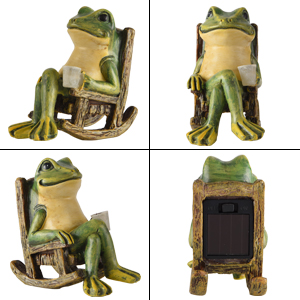

一句话结论：赢的不是“灯”，是“一只可爱的动物 + 一个能装东西的造型 + 几颗暖光 LED” + 一份送得出手的礼物。主图负责让人点进来，A+ 负责让人相信、让人决定买来送人。营销就按下面 6 个方面做，图片按 8 + 8 两套分类拍。
送礼人群 Mom / Grandma / Women价格带 $14–28太阳能 + 自动亮灯暖白光IP65 防水NiMH 电池
先说证据口径：这份分类是怎么来的
底本是同一天归档的三份报告：户外造型灯 Top 100 · A+ 图片索引（100 款，97 款有 A+，共 691 张）、四款商品素材补采（第 67–70 名，26 张附图已人工分类）、畅销拆解（2026-10-27，头部公式与避坑）。
本页的 A+ 分类来自抽样实看 18 张：第 1 名全 7 张，第 2 名前 3 张，第 5 名前 2 张，第 10 / 25 / 50 / 67 / 80 / 100 名各第 1 张。其余 673 张没有逐张看，所以下面的分类是“抽样 + 位置规律”的推断，不是 691 张的全量普查，不要把它当成每类各占百分之几的统计。
能确定的结构事实只有三条：每款 A+ 是 4–15 张，最常见 5–8 张；433 / 691 张是 1464×600 的横幅；97 / 100 款有 A+，第 51、60、63 名复核后未见 A+。排名是 2026-11-18 快照，不是实时排名。
营销分 6 个方面
方面 1站内视觉：主图 + A+ + 视频。这是离下单最近的一环，也是本页的重点。主图 7 张按顺序拍，A+ 按 8 类做，下面两节就是拍摄清单。
方面 2送礼人群：买家是送礼的人，不是园艺发烧友。头部标题里反复出现 Gifts for Mom / Grandma / Women。A+ 第一张横幅就要出现送礼画面（孩子把礼盒递给妈妈），Q&A 最后一问必须是“送人合不合适”。
方面 3节日与季节：3–6 月是主旺季，11–12 月是第二波。3–6 月花园季 + 母亲节，送礼标题前置 Mom / Grandma；11–12 月圣诞 + 乔迁礼物季，推成套与礼盒装；全年常驻 Housewarming / Birthday，不要只押一个节日。节日款提前 6–8 周换主图和横幅。
方面 4Facebook 自然流量：不投广告，靠“邻居口吻”晒单。发黄昏花园里的光、孩子和宠物跟灯的合影这种能让人想晒的图，文案不硬推，标签放末尾。A+ 里的场景图直接裁成社媒帖，一图两用，不用重拍。
方面 5信任与差评防御：先回答差评里最常问的三个问题。灯不亮 / 进水是头号死因，防水至少 IP44，头部做到 IP65；尺寸与照片不一致是头号退货源，主图必须放参照物；白天不好看就没有晒单和复购，白天颜值和夜景一样重要。
方面 6价格与套装：$14–28 是送礼不心疼的区间。超过 $30 就要靠大尺寸、成套、特殊造型讲故事。件数写清写准：第 69 名商品页写 8 件装、A+ 模块写 16 件装，这种不一致会直接丢信任。
A+ 图片分 8 类：每类是干什么的、长什么样、我们怎么拍
示例图都是 2026-11-18 归档的 Top 100 商品原图，版权归原卖家所有，仅作分类研究参考。点图可打开归档原文件，商品名点开是亚马逊原页。
第 1 类 · 品牌横幅：第一张，定调子（必做）
作用：买家滑到 A+ 区第一眼，知道这是什么牌子、什么东西、什么心情。抽样里 9 款的第一张全是横幅，但讲法分 4 种：
| 讲法 | 画面 | 样本 |
|---|---|---|
| 日间花园 + 送礼 | 白天花园大场景，右边是孩子把礼盒递给妈妈 | 第 1 名 Nacome 乌龟 |
| 纯品牌 + 产品 | 只有品牌名和一句口号，产品放在花园里 | 第 2 名 FOXMIS 青蛙 |
| 节日场景 + 送礼主张 | 圣诞门廊 / 雪地花园，标题直接写 Perfect Christmas Gift | 第 5 名雪人、第 25 名蘑菇屋 |
| 夜间氛围 + 卖点图标条 | 夜里亮灯的庭院，底部一排图标：太阳能、IP65、送礼、手工、免安装 | 第 10 名蜗牛、第 67 名浇水壶、第 80 名猫咪、第 100 名猫头鹰 |
我们怎么做：横幅只做一种——夜间氛围 + 送礼画面 + 图标条。标题写产品名 + 一句暖话，不要堆参数；图标条固定 5 个：太阳能、IP65 防水、NiMH 电池、手工上色、送礼佳选。图标条是全榜最通用的元素，第 10、67、80、100 名都在用，照抄这个结构不丢人。


第 2 类 · 工艺与品牌故事：让人觉得“这东西是用心做的”
第 1 名用 4 格讲完：设计灵感 → 打样 → 手工上色 → 成为陪伴，每格一张图，最后一格是孩子抱着乌龟和狗在花园里。作用不是讲技术，是给“手工上色”这个卖点一个证据。
我们怎么做：拍真实的，不要用 AI 生成的“设计手稿图”——第 1 名这张的手绘和打样图 AI 感很重，细看会穿帮。真实做法是：工厂手绘工位一张、上色特写一张、成品和孩子 / 宠物合影一张，三格就够。

第 3 类 · 太阳能功能：白天怎么充、晚上亮多久、开关在哪
第 1 名第 3 张是全榜讲得最清楚的一张：左边白天花园“6 小时充满”，右边夜里“自动亮 8–10 小时暖光”，下面两格是太阳能板背面特写和 ON / OFF 开关，配一句首次使用说明——先拨到 ON，不用再管。
我们怎么做：一张图讲三件事就够：晒 6–8 小时 → 自动亮 8–10 小时 → 开关拨 ON。红线两条：不要写 12–14 小时这种极端值，差评会反噬；要写清“需要 6–8 小时直射阳光”，阴天和遮阴处亮不久是正常的，先写出来比被差评写出来强。

第 4 类 · 摆放场景四格：告诉买家“放哪儿都好看”


第 5 类 · 多角度外观：背面长什么样，先给买家看
第 2 名第 2 张是四视图白底图：正面、侧面、背面，背面那格能清楚看到太阳能板。作用很实际：减少“和照片不一样”的退货，也顺带证明太阳能板是真的装在产品上的。
我们怎么做：一张四视图就够，正面、侧面、背面（太阳能板）、细节（灯珠 / 上色）各一格，白底，不用修得太过，真实比精致重要。

第 6 类 · 夜间亮灯生活场景：有人在画面里，灯才有温度
第 2 名第 3 张：孩子坐在灯边读书，青蛙灯在旁边亮着暖光。没有参数，没有图标，就是一个晚上家里的画面。这一类和第 4 类的区别是：第 4 类讲“放哪儿”，这一类讲“晚上和谁一起用”。
我们怎么做：拍黄昏，不要拍纯黑夜——纯黑夜只剩光点，看不出产品长什么样（畅销拆解里专门提醒过这一点）。画面里要有人：孩子、妈妈、宠物，至少出现一个。Facebook 的帖子也可以直接用这张。

第 7 类 · 买家晒单与口碑：有用，但只能用真的
第 1 名第 4 张是四张社交卡片：头像、名字、点赞数、五星、一段评语，标题叫 Garden Moments with Nacome Decor，下面还顺带露出同品牌猫咪和鸟浴盆两款，等于口碑 + 交叉卖货一次做完。

第 8 类 · Q&A 答疑：把差评的问题提前答掉
第 1 名最后三张全是 Q&A，一张两问：什么材质（高密度树脂、IP65、抗 UV 涂层）、能不能全年放户外、开关怎么用、放哪儿充电最好、灯有多亮、送人合不合适。问的全是买家下单前会犹豫的事，答的全是差评高频点。注意它还顺带说了两句关键信息：用的是 AAA NiMH 电池（不是锂电），包装是 100% 纸浆可撕开礼盒。
我们怎么做：Q&A 只写 6 问，顺序照抄第 1 名：材质与防水 → 开关与电池 → 放哪儿充电 → 亮多久多亮 → 尺寸多大 → 送人合不合适。每一问的答案都要带一个可验证的数（IP65、6–8 小时、8–10 小时、7 颗 LED），不要写“非常亮”“超级防水”这种没法验证的词。

主图与附图分 8 类：复用第 67–70 名已做的人工分类
附图分类不用重做：四款商品素材补采已经把第 67–70 名的 26 张附图一张张看过、标过类。下面是把 21 个原始标签合并成的 8 类，直接拿来当我们的附图拍摄清单。
| 类 | 画面 | 在 67–70 名的原标签 | 我们怎么做 |
|---|---|---|---|
| 1 · 主图 | 产品白天实拍，脸清楚 | 主图 · 浇水壶 / 圣诞侏儒 / 火焰灯 / 猫咪蝴蝶 | 白天先看脸：树脂做工、上色均不均匀，白天就定了。主图不要用夜景。 |
| 2 · 夜景亮灯 | 黄昏或夜里亮起来的样子 | 日间充电与夜间亮灯、庭院日夜场景、投影光效 | 拍黄昏花坛里的光，不要只拍黑夜里的光点；同一张里最好有白天和夜里对比。 |
| 3 · 尺寸说明 | 参照物 + 尺寸数字 | 尺寸说明、尺寸与安装配件 | 手、花盆、门廊台阶做参照物；英寸 + 厘米双标；9–12 英寸是庭院款安全区。 |
| 4 · 太阳能与功能 | 充电、亮灯、开关、结构 | 太阳能充电与自动亮灯、产品结构与火焰效果、材质与结构细节 | 太阳能板特写一张，开关位置一张；火焰 / 投影等特殊光效单独一张。 |
| 5 · 防水与耐候 | 雨天、户外过夜 | 雨天防水功能、雨天场景与耐候功能 | 雨天实拍一张，IP 等级写在图上；不要只写“防水”，要写 IP44 还是 IP65。 |
| 6 · 场景与节日 | 摆在哪里、过什么节 | 节日庭院场景、节日室内场景、壁炉场景、家庭使用场景、节庆布置场景 | 庭院、门廊、阳台、壁炉各一张；圣诞款拍壁炉和门口，母亲节款拍花坛和餐桌。 |
| 7 · 送礼与包装 | 礼盒、开箱、送人 | 礼物与庭院场景、送礼场景、产品包装 | 礼盒开箱一张，盒子本身要好看——第 1 名把“100% 纸浆礼盒”写进 Q&A 就是在卖包装。 |
| 8 · 安装步骤 | 怎么装、配件有什么 | 安装步骤、尺寸与安装配件 | 地插款拍“插地”两步；套装拍配件全家福，件数和 A+ 保持一致。 |
直接照抄的两套顺序
主图 7 张顺序
1 · 白天主图（脸清楚）→ 2 · 黄昏夜景亮灯 → 3 · 尺寸参照（手 / 花盆）→ 4 · 太阳能板与开关 → 5 · 庭院场景 → 6 · 送礼与礼盒 → 7 · 雨天防水或安装步骤。7 张里至少 2 张是夜景，至少 1 张有人或宠物。
A+ 5–7 个模块顺序
1 · 品牌横幅（夜间氛围 + 图标条）→ 2 · 太阳能功能（充多久、亮多久、开关）→ 3 · 摆放场景四格 → 4 · 工艺故事（三格真实拍摄）→ 5 · 多角度外观 → 6 · Q&A（6 问）→ 7 · 买家晒单（有真实评价再上，没有就空着）。第 1 名的 7 张就是这个顺序，照抄结构，换成我们的实拍。
拍摄清单：开拍前逐项打勾
红线与还没核实的事
未核实：A+ 分类是 18 张抽样，不是 691 张全量普查，各类占比没有统计；附图分类只覆盖第 67–70 名，其余 96 款的附图还没采；价格、月销、排名都是 2026-11-18 快照，榜单每小时会变；Facebook 自然流量的打法来自本店“付费效果差、转纯自然增长”的已有结论，没有新的投放数据。
下一步最值得做的三件事：先按主图 7 张 + A+ 8 类拍一套我们自己的图，拿去和第 1 名并排比；把第 67–70 名之外的附图按同样 8 类补采，看到底哪类出现最多；母亲节款（3–6 月）现在就开始拍黄昏夜景，不要等到 3 月。
来源
底本：户外造型灯 Top 100 · A+ 图片索引 · 2026-11-18（100 款、97 款有 A+、691 张；第 51、60、63 名未见 A+；第 69 名 8 件装对 16 件装）· 四款商品素材补采 · 2026-11-18（第 67–70 名，26 张附图人工分类）· 畅销拆解 · 2026-10-27（头部公式、买家画像、避坑三条、季节节奏）。示例图片与商品名版权归原卖家所有，仅作选品研究参考。研究方式：按榜单排名定位商品，A+ 图片按采集顺序抽样实看并分类；未逐张核查的部分已在文中标明。